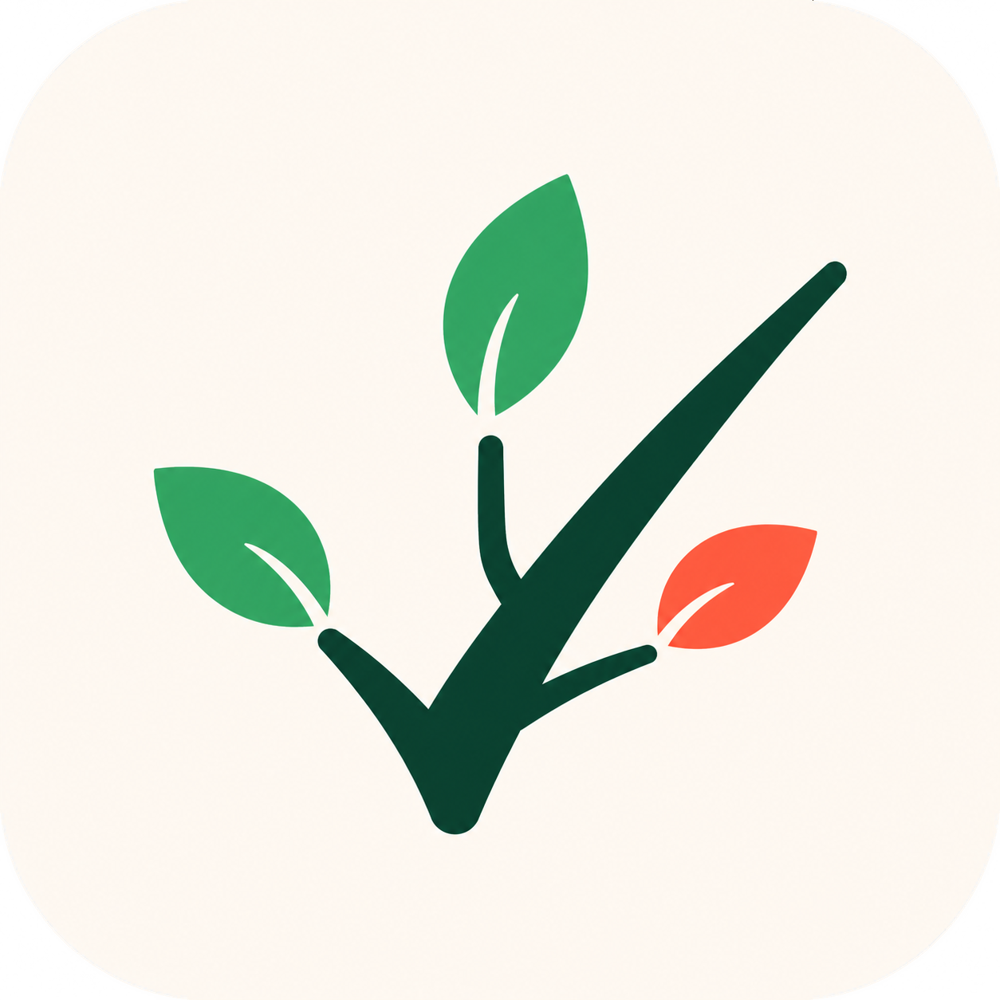

Progetti che mettono radici.
Organizza progetti, sotto-progetti, task e sotto-task in un albero chiaro. Ogni idea trova il proprio ramo.

tasktwig. Apri l'appUn posto semplice per quello che devi fare oggi e per i progetti che vuoi far crescere domani.
Task, progetti e giornate finalmente collegati.
Ci sono piccole cose da chiudere, grandi idee da seguire, progetti che si dividono in altri progetti. TaskTwig tiene insieme tutto questo con una struttura che puoi far crescere insieme alle tue esigenze.
Esplora le funzioniOrganizza progetti, sotto-progetti, task e sotto-task in un albero chiaro. Ogni idea trova il proprio ramo.
Vedi le scadenze di oggi e ciò che è rimasto indietro. Filtra i task completati e verificati quando vuoi concentrarti sul prossimo passo.
Condividi progetti in gruppi, invita altre persone e assegna ruoli diversi per collaborare con chiarezza.
Trasforma un'idea in un progetto, spezzala in passi concreti e lascia che TaskTwig ti mostri cosa conta adesso.
Dai compiti di oggi alle abitudini che ritornano.
Distingui l'urgenza da ciò che può aspettare.
Nuovo, in corso, completato e verificato.
Esporta i tuoi dati da web, Android e desktop.
Apri TaskTwig dal browser oppure scarica la versione per Android o Windows.
Comincia da una cosa. Il resto può crescere con te.
Apri TaskTwig